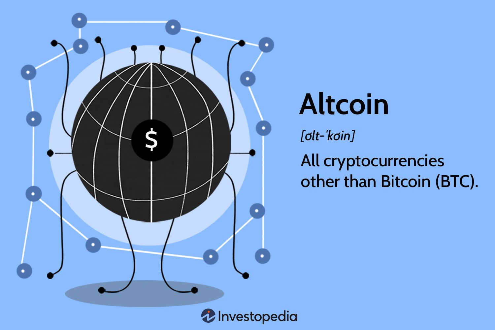

The Future of Cryptocurrency
Despite its potential, cryptocurrency faces several significant challenges. Regulatory uncertainty remains a major concern, as governments struggle to balance innovation with consumer protection.
Decentralization
Unlike traditional currencies controlled by governments and central banks, most cryptocurrencies operate on decentralized networks using blockchain technology. No single entity (government or institution) has control over it.
Digital & Borderless
Security issues, such as hacking and fraud, continue to undermine trust in digital currencies. Scalability is another critical challenge, as current blockchain technologies struggle to handle high transaction volumes efficiently. Addressing these challenges is essential for the widespread adoption of cryptocurrency.
Security & Encryption
Cryptocurrencies use cryptographic techniques for security. Transactions are irreversible, meaning once confirmed, they cannot be changed.
Cryptocurrencies exist only in digital form and can be sent or received anywhere in the world. No need for intermediaries like banks.